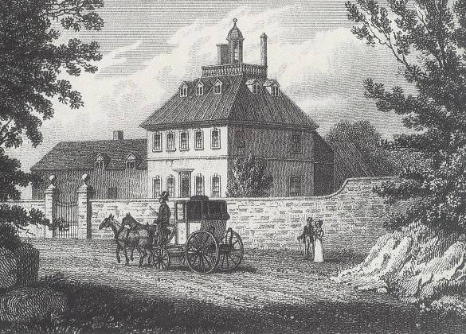

In the autumn of 1735, Johnson opened Edial Hall School near Lichfield as a private academy. He had only three pupils and the venture was unsuccessful, costing a substantial portion of his wife’s fortune. Instead of trying to keep the failing school going, Johnson began to write his first major work, the historical tragedy ‘Irene’.